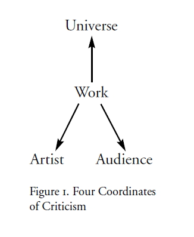
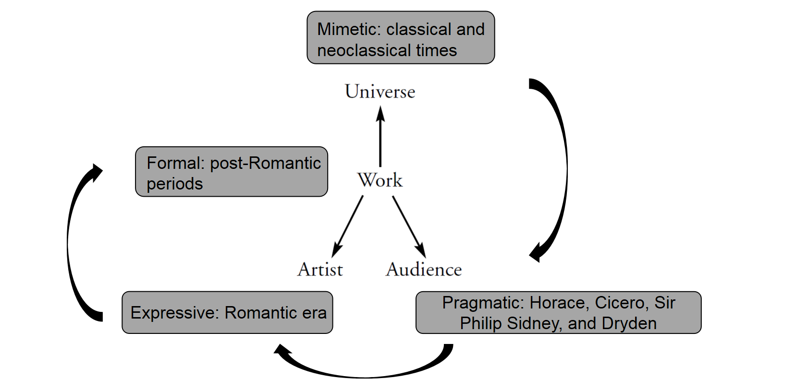

Today, let's talk about an article abridged from 《Configurations of comparative poetics three perspectives on Western and Chinese literary criticism》—— a book of Professor Cai Zongqi. This article is the first chapter of this book, and I believe that it will give you a better view of the development of western criticism by showing us the related shifts of philosophical truth-claims of lterature in western philosophy.
Professr Cai begins with M. H. Abrams's grand scheme, which is to delineate the development of Western critical traditions.

According to this diagram, it is easy to find the relationship between the shifting loci of criticism theories and philosophical truth-claims of literature.

As Professor Cai said,"As these concepts of literature undergird the development of major Western critical theories, we should carefully examine them and seek insight into the inner dynamics of the development of Western poetics."
This article focus on six truth-claims of literature in history:
If you are interested in details of this article, please click the items in the navigator on the left for further introduction of every part.